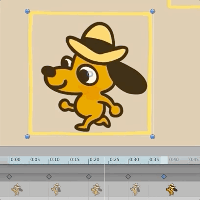

Description
This is fine is a Unity game built by a team of artists and programmers for the Ludamdare 46 Game Jam. The jam lasted for 72 hours and 4959 games were submitted. The theme was “Keep It Alive”.

Ideation
Our game comes from a meme "This Is Fine" by KC Green’s in his 2013 webcomic "On Fire". We struggled to design game mechanics that best fit the theme of the meme. At the end, countless debate on the mechanics resulted in a set of
mechanics that all of us are satisfied with.
- Each level, there are two goals, to spread the fire and burn all the furnitures, and to lure the dog to his coffee.
- Players has the press the “Wait” button to advance time, which allows the fire to spread to nearby source, and allow the dog to move.
- Players will have to place variety a of furnitures in different shapes onto the grid to spread and maintain the fire, or eventually it goes out on its own.
- The dog can be lured by a stick placed in a horizontal or vertical place within 10 steps.


Building the comfy Dog Home in Grid
In this project, my main contribution is the design of the code structure and to implement the grid system for the game. Some of the requirements were:
- Players will be abl to drag elements onto a grid
- Elements mostly comes in different shapes and occupy multiple nodes. For example, there was a L-shaped sofa that takes up 4 nodes
- When players pick up an element, the element will follow the mouse with the most top-left node as the anchor
Originally, the team has decided an alternative approach to implement the grid.
We were going to build it with a 2D Array of GameObjects to contain the current elements on the grid. Initially, we think this way makes the most sense, and was our first instinct when we think of a grid.
However, considering one of the amazing L-shaped bed another programmer has suggested in sketch, I quickly realized the 2D Array of GameObject will not be the most efficient way to implement it.
The problem is that most of our object are going to take up multiple nodes on the grid. To explain this, let’s use the beloved L-Shape Bed as an example:
The bed is occupying nodes [0,0], [1,0] and [0,1]. In this case, with our old approach, all 3 nodes on the 2D Array would have a piece of the bed game object, which is not efficient and would not work with our mechanics.
Another similar approach is to allow one of the node contains the entire object, and the object itself keeps references to the 3 nodes it occupy. Although I did not suggest this approach at the end, some of the aspect were taken into our
final structure. The problem with this approach is that there is no need to have a 2D Array structure anymore because the object itself will still have to keep references on its occupying nodes.
At the end, I suggested to simply storing the game objects in a 1-dimentional array, and have each object keep track of it’s root node (most top-left node) and subsequent node by displacement from the root node.
One of the advantage for this approach is we no longer need to loop through a 2D array to check the objects, which possibly resulted in performance increases.
Another advantage comes from the way subsequent nodes were kept track of by the displacement from the root node. The displacement allows us to quickly process and understand where the child nodes are even as the object is moving around. For
example, the L-Shaped Bed has the root node at [0,0], and the displacement of its subsequent nodes are [1,0] and [0,1]. When it’s root position is moved [5,5], with the displacement instead of hard coded location, we can quickly obtain the
child node positions at [6,5] and [5,6] by just adding the displacement to the current root position.
To root out the potential problem and explain better to the team, I quickly built a prototype to demonstrate. I have also considered the other applications of the grid such as prevention of user dragging an element to a node occupied.
My approach was accepted and adopted into the final game.
Working with the other Dogs
I have gathered experience and had fun on working with other programmers. The grid is largely depended on by the other features. For example, when the objects are moving, they have to know if the next node is occupied by any objects; when the
fire is spreading, it needs to know the currently occupying object in the near nodes. When the need of a new function is suggested, new methods were written to satisfy the needs. Gradually, the grid system becomes something closer to an
API, an isolated module that can be tested individually.
Role in the dogs
Other than the grid, I am also responsible to import most of the sprite sheets and turn them into animations and animation controllers. Additionally, I have worked on the inventory system, helping with the drag and drop raycast collision problem.
Dog stuck in a small house
When we are in the phase of making levels, I tasked myself to build the most clever level I can. I started by thinking how the difficult levels are like in many puzzles games I have played. Some of them uses tight constraints to limit
player’s choice and requires dynamics between game functions. I started by placing objects in a compact grid of 3 X 3, but soon realize the lowest size of grid that my level in mind needs is 5 X 5. At the end, I successfully built a level
that I am proud of. Please play my level #8.
Where did the Dog end up?
We received 116th overall, not as good as our previous submission to LD45 Finished Racoon Bikini Game, but the process is extremely fun which made the result not as important. We will definitely join the next jam as well.
Please come and try our game: This Is Fine